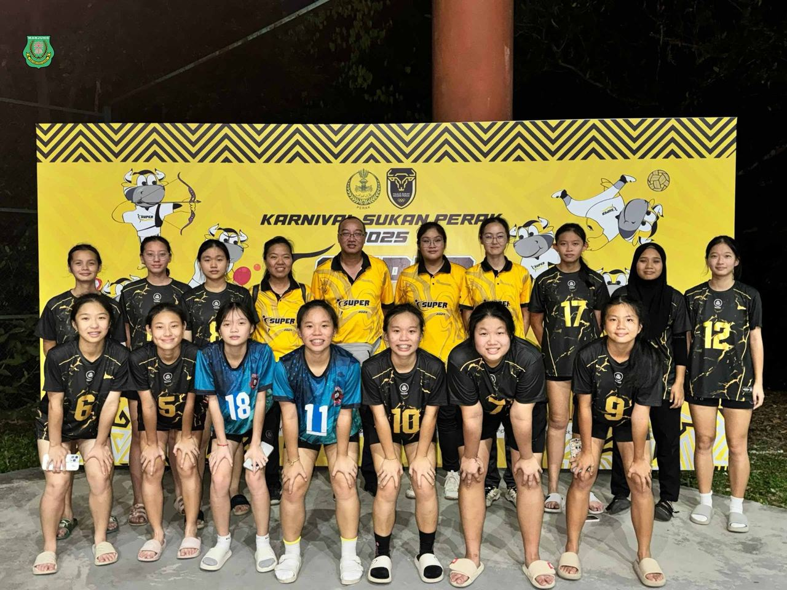
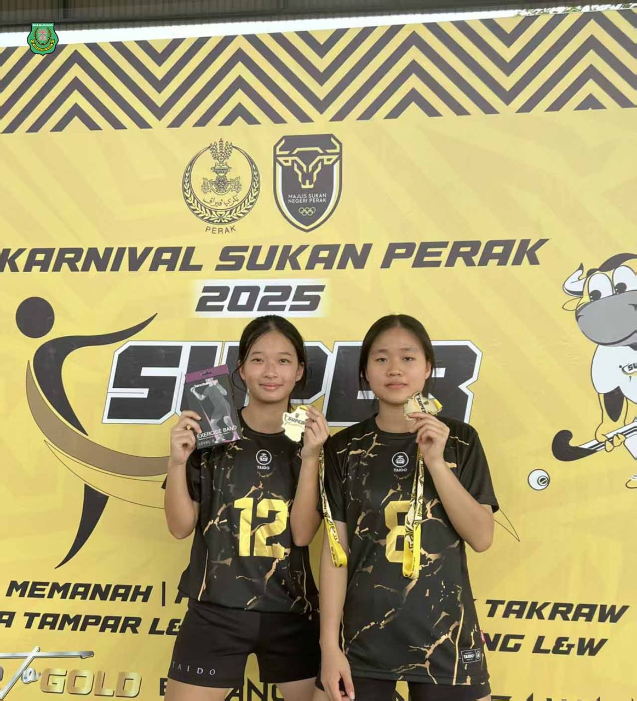
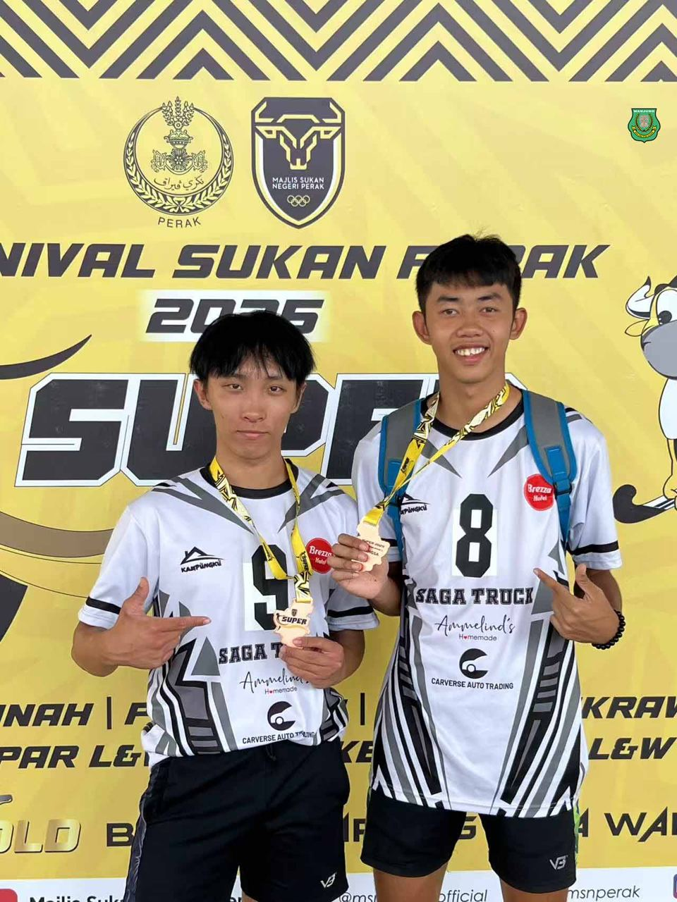
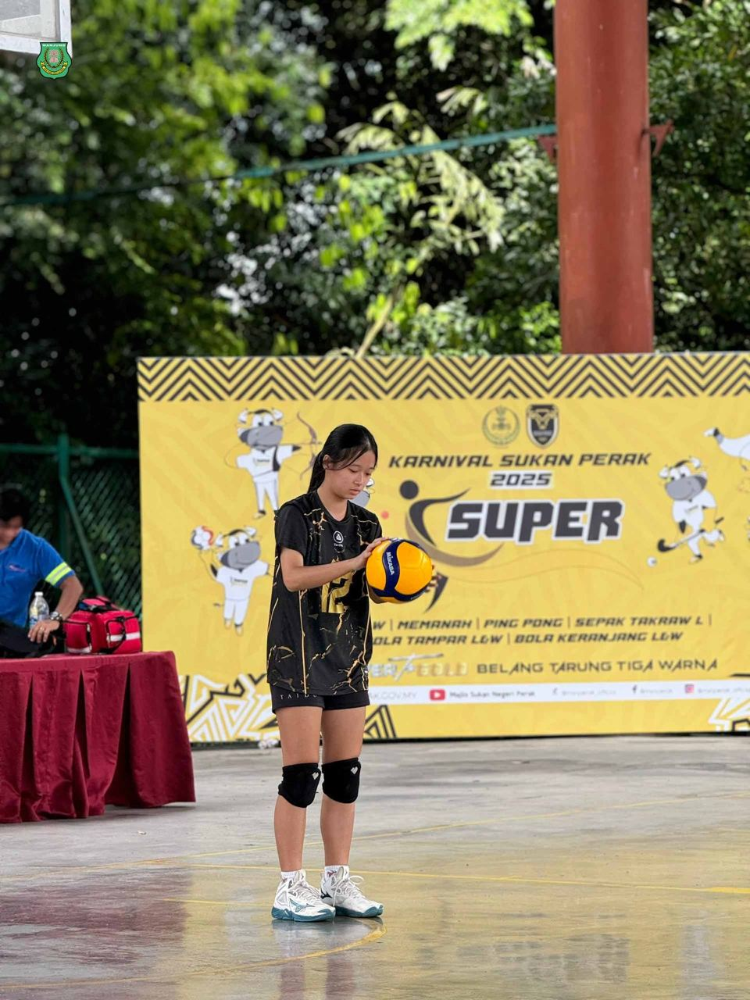
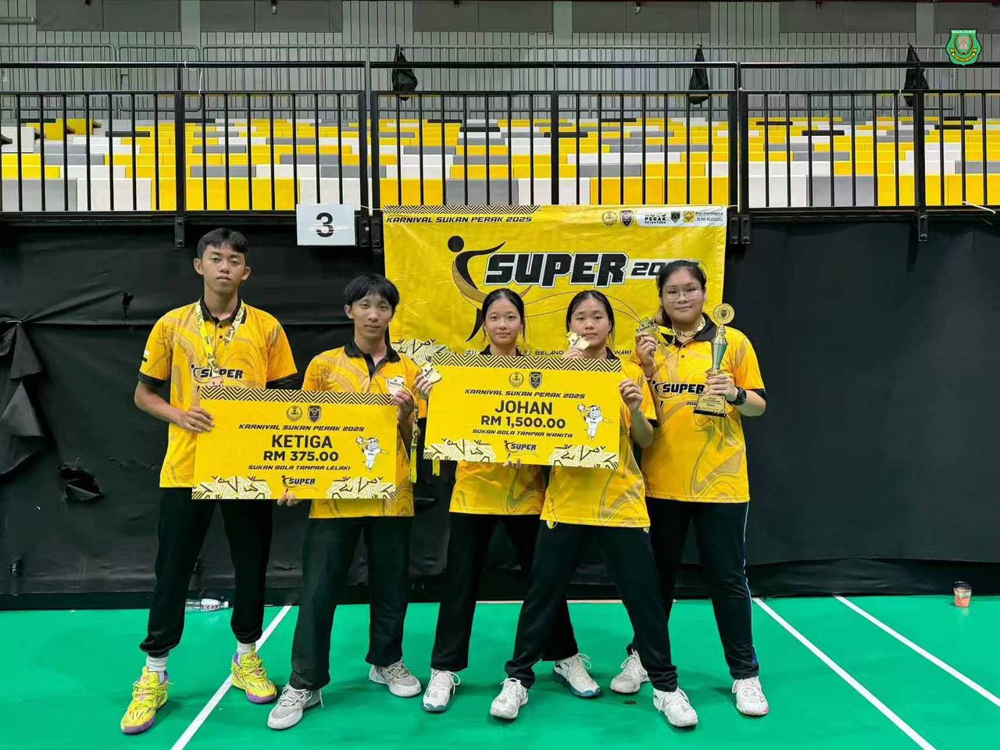
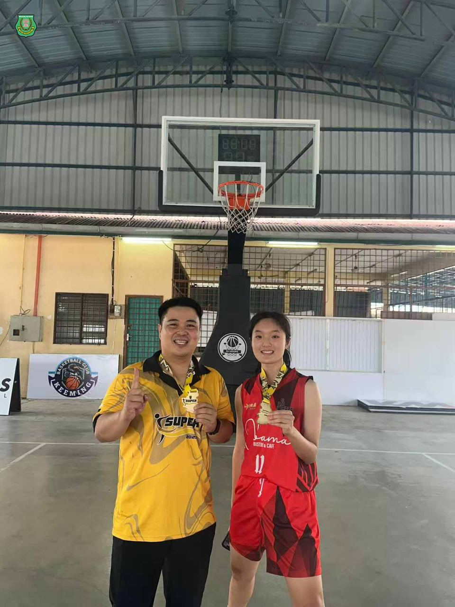
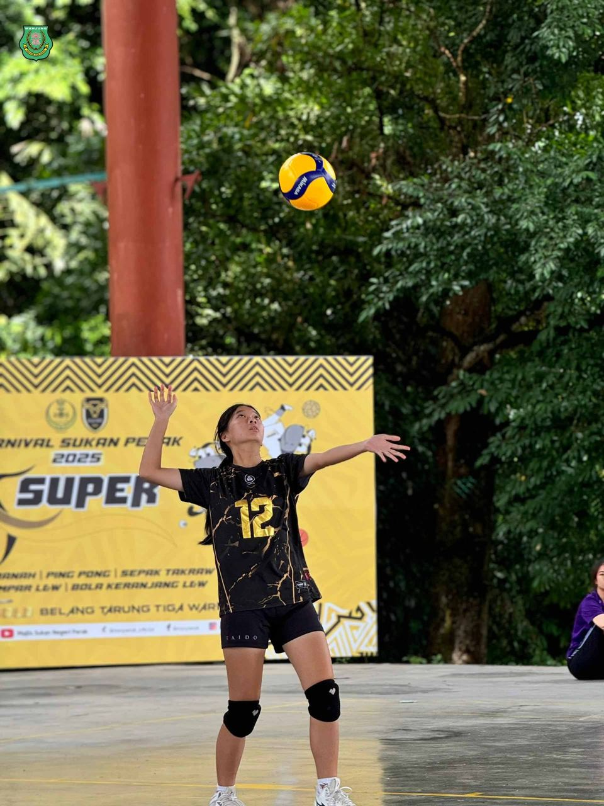
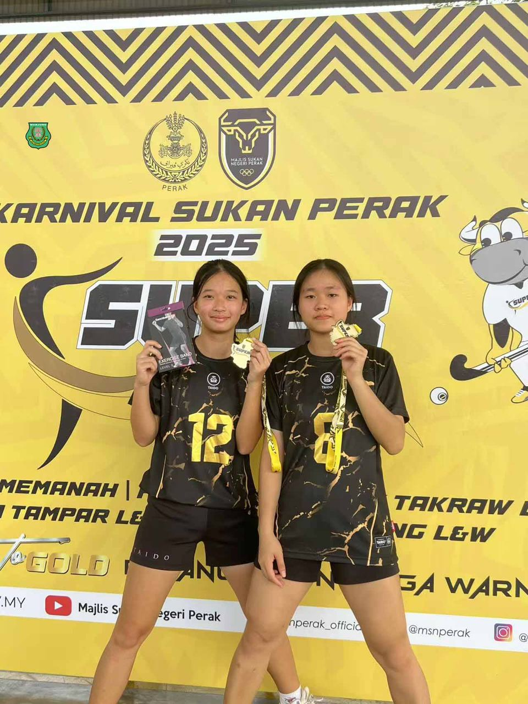

南华独中健儿扬威霹雳运动嘉年华赛场
南华独中健儿扬威霹雳运动嘉年华赛场
代表曼绒县女排女篮双双夺冠
由霹雳州体育理事会（Majlis Sukan Negeri Perak, MSN）主办的2025年霹雳州体育嘉年华（Karnival Sukan Perak, SUPER 2025）日前圆满落幕，南华独中学生代表曼绒县出征，于多个项目中表现亮眼，载誉而归。
在颜国政体育处主任的带领与协调下，本校学生在U20女子排球与女子篮球项目中脱颖而出，表现出色，展现出南华学子坚韧不拔、奋勇拼搏的运动精神。
其中，高二文商二的陈盈绚与高二文商一的詹茗稀在U20女子排球项目中荣获冠军，与队友携手为曼绒县赢得殊荣。而同班同学苏雅杰也在U20男子排球组别中勇夺季军，为校争光。在篮球赛场上，来自高三文商的池凯萱更不负众望，与队伍一同勇夺U20女子组冠军，展现卓越球技与团队默契。
面对学生们的卓越表现，校长陈丽冰博士表示高度肯定与欣慰“ 体育不仅是体能的训练，更是品格与团队精神的体现。本校办学理念鼓励学生认识自己、发挥天赋，如今同学们在州级赛场上勇夺佳绩正是他们展现热忱与才能的舞台。”
率团参赛的体育处主任颜国政老师亦受访表示：“学生们付出的努力与平日的训练，在这次比赛中得到了回报。能在高水平赛会中脱颖而出，证明他们的坚持与毅力，也感谢学校与家长一路以来的支持。期望南华独中的学生以他们为榜样，再接再厉，在未来的体育赛场上继续发光发热，续写辉煌篇章。”







